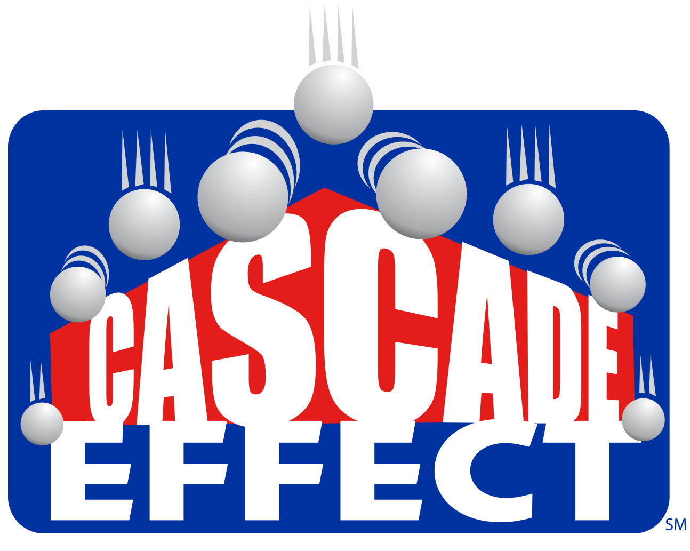

About FTC
2014-15 Game: Cascade Effect
View Previous Games 2013-2014
|  |
Related Resources:
CASCADE EFFECT℠is played on a 3.66 m x 3.66 m (12’x12’) square Field with approximately 30.5 cm (1’)-high walls and a soft foam mat playing surface. Two randomly selected teams are paired together as an Alliance to play a match against a second Alliance. Alliances are designated as either “Red” or “Blue.”
Scoring Elements are 160 white plastic balls - large (40) and small (120). In the middle of the field is the Center Field Structure which contains two Ball Dispensers with trap doors held in place by Alliance-specific Kickstands. There are also two Center Goals - one Red and one Blue - with Infrared Beacons placed beneath each Goal. The field has six Alliance-specific Rolling Goals with clear Ball Tubes of various heights (30 cm, 60 cm, 90 cm) as well as two Alliance-specific Ramps, Platforms, and Parking Zones.
At the start of the Match, the Balls (large and small) are loaded in the Dispensers in the Center Field Structure. Each Team is given two balls (one large and one small) that can be pre-loaded onto their robot. Matches have two distinct periods of play: a 30-second Autonomous period followed by a two-minute Driver-Controlled period, which includes a 30-second End Game.